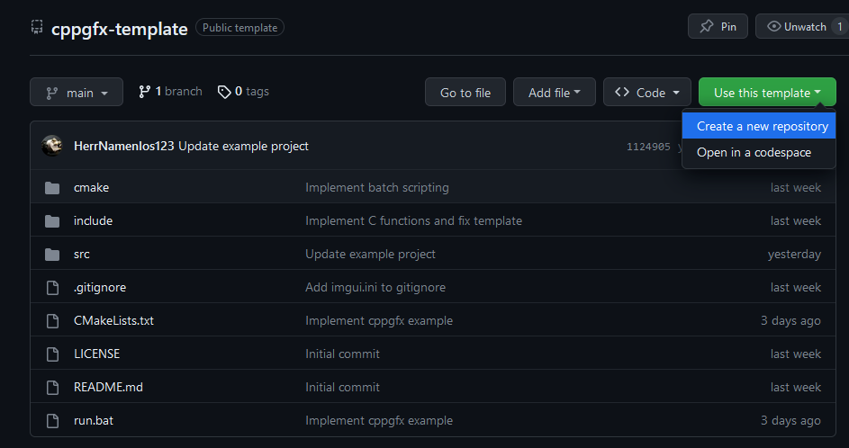
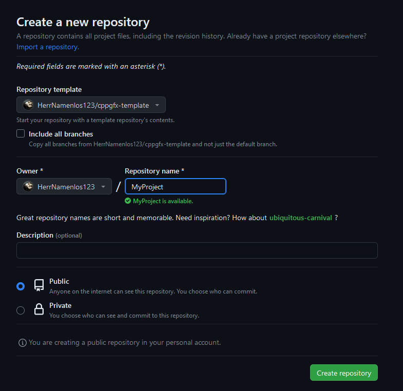
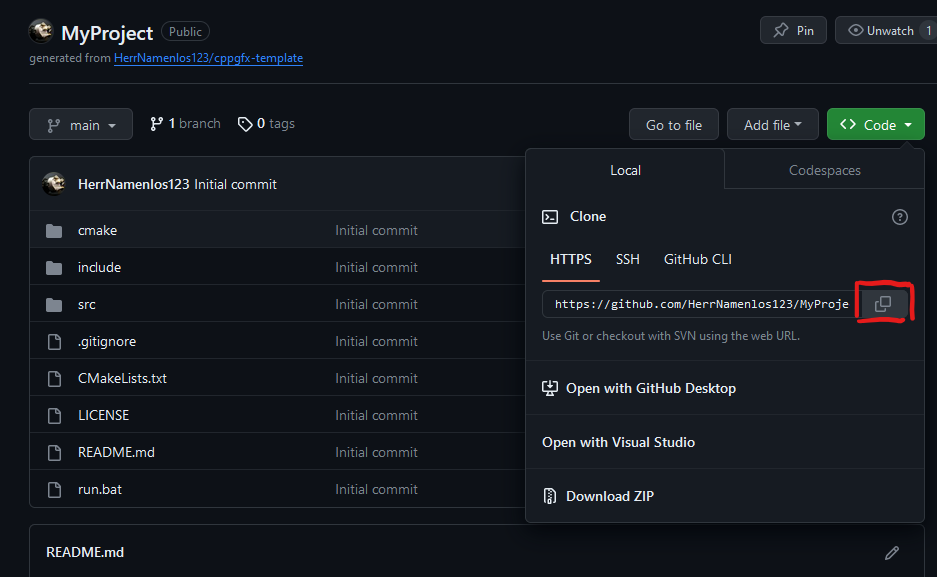
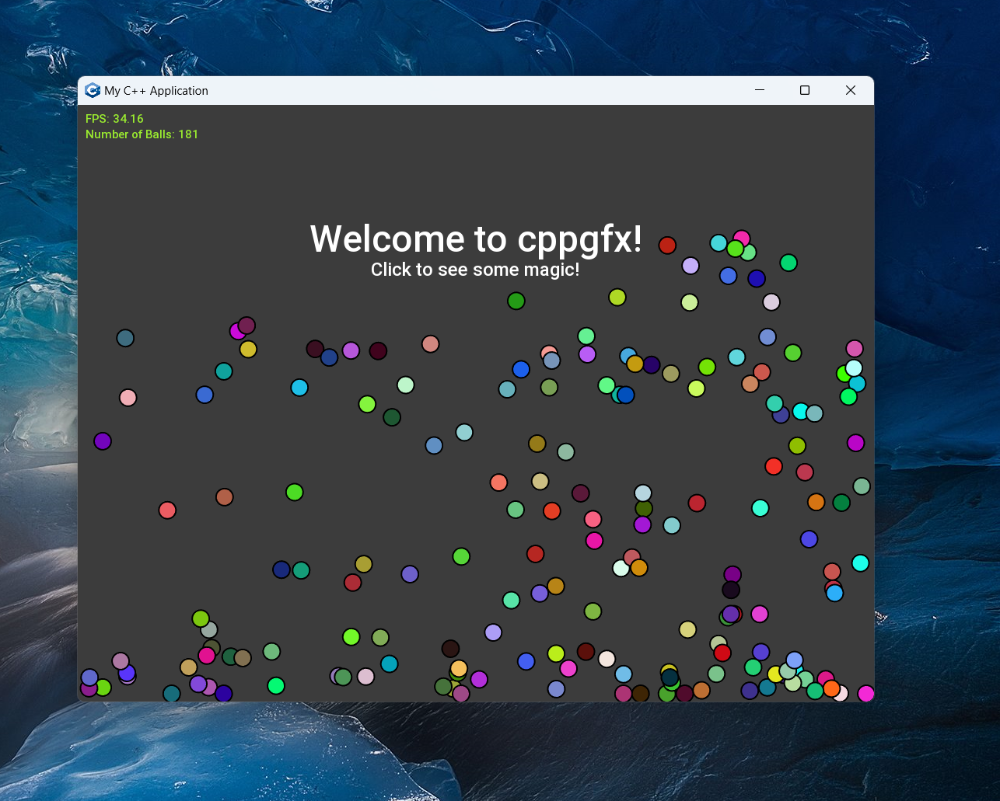

|
cppgfx
0.1.0
C++17 educational graphics library
|
|
cppgfx
0.1.0
C++17 educational graphics library
|
cppgfx is a C++17 graphics library, which is heavily inspired by Processing. It is designed to be easy to use, while still being fast and flexible. The main goal is to encourage beginner programmers to program their own ideas while having a ton of features at their fingertips.
It was created because usually students are taught programming by using the command line, which is not very exciting. cppgfx tries to change this so that students already have a boilerplate project and can bring their own ideas to life. Projects can range from simple visual effects to fully featured games and scientific data visualization.
cppgfx is based on some of the best supported C++ libraries, such as SFML and Dear ImGui. The bridge is provided by ImGui-SFML.
SFML is a graphics framework targeted at 2D game development, while ImGui is a GUI library. This allows you to create gorgeous minigames with pretty GUI, or whatever you would like to visualize.
There are more libraries in cppgfx, for example spdlog for logging and glm for vector math and matrix operations. Many others are not yet listed or yet to come.
Additionally, a serial library for Arduino communication is planned, as well as one for 3D rendering. Feel free to file an issue if you have any feature ideas or suggestions for future libraries!
cppgfx is NOT a fully featured game engine or alike, and is not intended to be used for any sort of production. You can use it however you like, but it was never designed for more than mid-sized educational projects on a single computer.
See Modules to see all available functions you can call.
To get started with cppgfx, the quickest way is by using the template repository.
If you just want to try things out to learn the programming languages, and you do not intend to use the project for anything serious, simply clone the template repository.
Open a terminal and enter:
Now continue with the section Running the project.
If you want a proper GitHub repository with a project using cppgfx, that you want to push commits to, use the Template repository on GitHub.
Visit https://github.com/herrnamenlos123/cppgfx-template
Next, use the Template using GitHub: 
Now, choose a name and create the repository: 
Awesome! Now you have your own GitHub repository for your project.
Lastly, copy the URL of your own project and clone it: 
Now continue with the section Running the project.
First of all, you need CMake. Here is the direct download link for Windows 64 bit
To build the project, you must choose which IDE to use. You can choose between CLion and Visual Studio. Visual Studio Code is NOT Visual Studio!!!
You must have a JetBrains License to use CLion, if you study at TU Graz you can create a Jetbrains account using your TU Email. Visual Studio Community is free.
If you want to learn proper coding, I suggest getting CLion, if you just want to build the project, use Visual Studio and install the C++ workload.
If you just want to compile using the terminal you can do that too, but you must already have a compiler installed. You can install Visual Studio for the compiler, and then compile using the terminal anyways.
When CLion is configured, open the folder of the repository you just cloned as a project in CLion. Then, wait for the CMake task in the bottom left (green dot) to finish. After that, simply click Run in the top right corner. The project should run successfully.
After Visual Studio is installed, enter the repository folder in a terminal. Now, simply call ./run. This should configure the project using CMake, build and run the project. Now you can either continue to run the project using ./run, or you can open Visual Studio.
You do this by going into the build folder that was generated, and inside you will find a .sln file that you can double-click. Now Visual Studio will open.
Next time you can simply open Visual Studio and select the project from the list. To run the project, simply hit F5.
Congratulations! You now have cppgfx running and you can change the code to do whatever you like.

The src folder contains all source files containing implementations of functions.
The include folder contains all header files that are used to share functions between source files.
CMakeLists.txt defines how your project is built.
You can change the line project(MyProject VERSION 1.0.0 LANGUAGES C CXX) to the project name and version you want. Be careful with the rest of the file.
Have fun coding!
Finally, see Modules to see all available functions you can call.